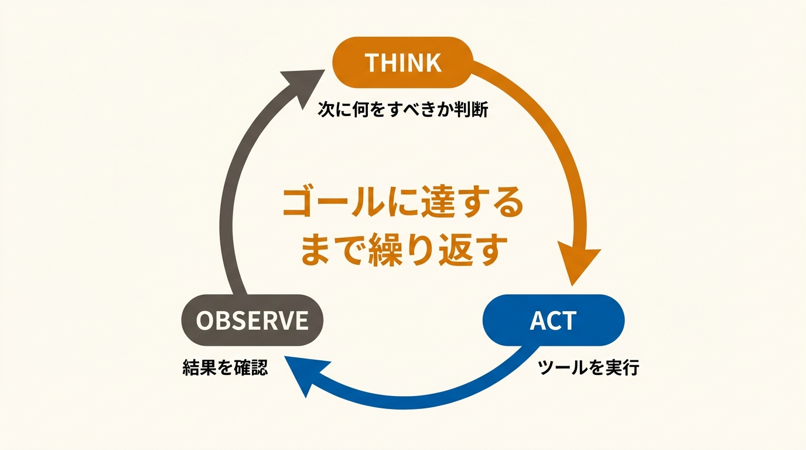

DIFY PLUGIN COMPETITION 2026
からあげ
店長クン
自分で考えて、自分で動くAIエージェント
Difyプラグイン ・ 13ツール統合 ・ 尾嶋洋一
1 / 10
01 — なぜコンビニ店長か
店長の質によって業績が左右される
1店舗あたりの年間廃棄額
468
万円
全国コンビニ店舗数
56,000
店
発注判断
ベテランの経験と勘に依存。異動で消える暗黙知
業績格差
同じ立地・品揃えでも店長の判断力次第で差が出る
新人育成
一人前になるまでのミスが直接ロスになる
本部施策
「天気を見て調整して」→ 具体的な数字がわからない
2 / 10
02 — 作ったもの
ローソンオペレーションに特化した自律型エージェント
現状
からあげ店長クン導入後
発注
ベテランの勘で数量決定 → 廃棄・欠品
発注
「明日の発注を最適化して」
→ 天気×需要予測×在庫で算出
急な欠勤
電話 → シフト表修正 → LINE連絡で30分
急な欠勤
「田中さん休み。対応して」
→ シフト再編＋LINE文面まで自動
売上分析
Excel手作業 → 週次レポートに2時間
売上分析
「今週のダッシュボード作って」
→ グラフ付きHTML即生成
からあげ店長クン = LLM + 13個の業務特化ツール
話しかけるだけで成果物が出る。ツール選択・実行順はLLMが決定。
3 / 10
03 — エージェントとは
LLMに自律的に考えて行動させる

EXAMPLE
「明日の発注を最適化して」
T
天気と在庫を確認すべき
A
hourly_weather
を実行
O
明日は晴れ・最高32°C
T
気温が高い → 飲料需要を予測
A
demand_forecast
を実行
O
飲料 +40%、アイス +25%
T
在庫と照合して発注数を出す
A
order_optimizer
を実行
O
発注推奨リスト完成 → 出力
4 / 10
04 — ツール構成
エージェントが使える13のツール
売上・ダッシュボード
sales_analytics
dashboard_generator
dashboard_template
シフト管理
shift_manager
shift_optimizer
shift_table_generator
需要予測・発注
hourly_weather
demand_forecast
order_optimizer
在庫管理
inventory_manager
LINE連絡
line_composer
商品情報・基盤
lawson_items
datetime_utils
db_utils / data_loader
5 / 10
05 — デモ①
売上ダッシュボード生成
「今週の売上ダッシュボードを作って」
TOOL CHAIN
01
sales_analytics
02
dashboard_generator
03
dashboard_template
▶
録画再生
売上ダッシュボード作成と深掘分析.mp4
6 / 10
06 — デモ②
天気連動の発注最適化
「天気を見て明日の発注を最適化して」
TOOL CHAIN — 4連鎖
01
hourly_weather
02
demand_forecast
03
inventory_manager
04
order_optimizer
▶
録画再生
天気による需要予測と在庫最適化.mp4
7 / 10
07 — デモ③
急な欠勤対応
「田中さんが明日休みになった。シフトを更新してLINEの交代依頼文も作って」
TOOL CHAIN — 4ステップ
01
shift_manager
02
shift_optimizer
03
shift_table_generator
04
line_composer
▶
録画再生
シフト管理.mp4
8 / 10
からあげ
店長クン
Difyエージェント
13の業務特化ツール
自律的なタスク実行
08 — まとめ
開発者はツールを作る。
どう使うかはLLMが決める。
売上分析
ダッシュボード
シフト管理
需要予測
在庫管理
LINE連絡文
発注最適化
Dify Agent Mode ・ DuckDB in-memory ・ RandomForest ・ Open-Meteo ・ Inline HTML
9 / 10
APPENDIX
インストール方法
1
プラグイン画面を開く
Dify画面右上「プラグイン」
2
GitHubからインストール
「+ インストール」→「GitHub」
3
リポジトリURLを入力
下記URLを貼り付け
4
バージョン・パッケージを選択
最新版 → karaage-tencho-kun.difypkg
https://github.com/yoichiojima-2/dify-plugins
10 / 10